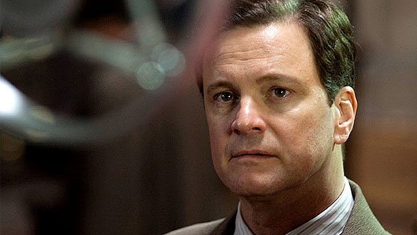
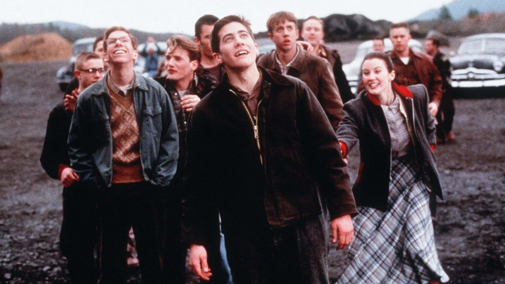
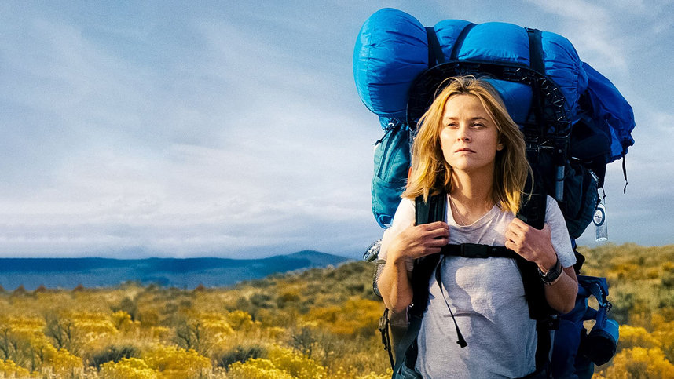

В погоне за счастьем
Год : 2006

В основу ленты легла история Криса Гарднера, отца-одиночки, который изо всех сил пытался изменить свою жизнь к лучшему ради того, чтобы обеспечить своему сыну Кристоферу счастливое детство. По сюжету после ухода жены и неудачного вложения в разработку медицинского сканера, который измеряет плотность костей, мужчина не может оплачивать жилье и вместе с ребенком оказывается на улице. Тогда он решает устроиться неоплачиваемым стажером в брокерскую компанию, чтобы стать биржевым маклером.
Король говорит!
Год : 2010

Действие фильма происходит в первой половине XX века. В основу исторической драмы «Король говорит!» легла история британского принца Альберта (Колин Ферт), который вот-вот должен взойти на престол как король Георг 6. Мужчина не готовился к тому, чтобы стать монархом, поскольку трон должен был занять его брат — Эдуард 8. Однако он отрекся от престола, чтобы жениться на разведенной американке Уоллис Симпсон.
Октябрьское небо
Год : 1999

«Октябрьское небо» — драма режиссера Джо Джонстона с Джейком Джилленхолом, Крисом Купером, Крисом Оуэном и Лорой Дерн в главных ролях, в основу которой легла автобиографическая книга Хомера Хикэма Rocket Boys. Действие фильма происходит в США в 1950-е годы. Главный герой картины — 17-летний парень по имени Хомер, который живет в маленьком шахтерском городке Колвуд. Долгое время он думал, что его, как и отца, ждет только одно будущее — работа на местной угольной шахте. Однако все меняется в октябре 1957 года, когда Советский Союз выводит на орбиту первый в мире искусственный спутник Земли — «Спутник-1».
Человек, который изменил все
Год : 2011
По сюжету после череды неудачных матчей и ухода своих главных игроков генеральный менеджер Oakland Athletics Билли Бин отчаянно хочет собрать новую и по-настоящему конкурентоспособную команду. Однако ему не хватает средств, чтобы пригласить в клуб хороших и дорогостоящих игроков. Тогда главный герой решает дать шанс менее известным игрокам без особых достижений и обращается к экономисту и выпускнику Йельского университета Питеру Бренду. Тот предлагает менеджеру собрать список новых спортсменов с помощью новаторской схемы расчета полезности игроков, в основе которой лежат математические расчеты показателей личной статистики бейсболистов.
Преодоление
Год : 2006
Главный герой, роль которого исполнил Марк Уолберг — 30-летний бармен по имени Винс Папале, который недавно потерял работу учителя на замену. Когда жена Винса уходит от него, оставив записку, в которой говорится, что он никогда ничего не добьется, мужчина решает попытать удачу и принять участие в открытых пробах, чтобы попасть в профессиональную команду по американскому футболу. Там его сначала приглашают в тренировочный лагерь, а затем Папале все-таки попадает в команду
Дикая
Год : 2014

В июне 1995 года, несмотря на отсутствие какого-либо опыта, Шерил решила в одиночку отправиться в пеший поход на 1770 километров по части Тихоокеанской туристической тропы, чтобы пережить недавний развод и смерть матери. Во время путешествия женщина размышляет о своем детстве и причинах, и-за которых она решилась пойти в поход. Героиня вспоминает о своей матери Бобби, чья смерть от рака стала причиной ее глубокой депрессии